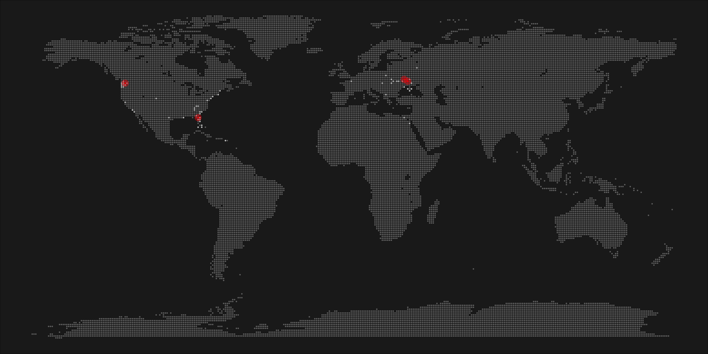
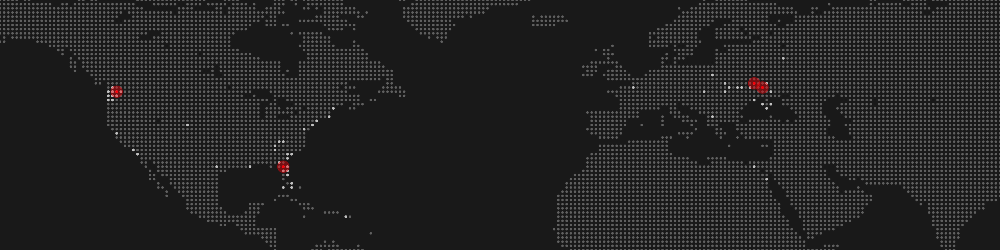

A walk-through of generating personalized pixel maps with R from scratch.
Today, I’m going to show you how to make pixel maps in R. Why pixel maps? Because they look awesome!
I was searching on the web for a while, but couldn’t find a good tutorial. Being stubborn as I am, I eventually figured out a way to get what I want. You know, if you torture your code enough, it might give you what you need.
The workflow here is very lightweight, and only requires tidyverse and maps to be loaded.
library(tidyverse)
library(maps)Next, as we are trying to make this map personal, you’ll need to supply a list of data points to map: places you’ve lived, places you’ve traveled to, and so on. I will leave you to your own devices here, whether you want to do some reverse geocoding, or look coordinates up one by one is up to you. The desired outcome here is a data frame containing latitude and longitude coordinates of the places you want to map.
As I’m creating a pixel map - I need dots in the right places. I’m going to plot a dot for each degree, and therefore I need my coordinates rounded to the nearest degree.
The next step is the key to getting a pixel map. We are going to fill the entire plot with a grid of dots - 180 dots from south to north, and 360 dots from east to west, but then only keep the dots that are on land. Simple!
lat <- tibble(lat = seq(-90, 90, by = 1))
long <- tibble(long = seq(-180, 180, by = 1))
dots <- lat %>%
merge(long, all = TRUE)
dots <- dots %>%
mutate(country = map.where('world', long, lat),
lakes = map.where('lakes', long, lat)) %>%
filter(!is.na(country) & is.na(lakes)) %>%
select(-lakes)At this point, you are pretty much done with prep work. The next step - creating the visuals - will be highly dependent on your data, your needs, and your wants.
As said earlier, this is where we part ways and you are left on your own. I will provide my personal workflow as an example, but it may not work best for your needs. It’s up to you and your creativity now!
I like defining a theme upfront. Mainly to remove all unnecessary chart features and define main colors.
color_bk <- "#212121"
theme <- theme_void() +
theme(panel.background = element_rect(fill=color_bk),
plot.margin = unit(c(0, 0, 0, 0), "cm"))
plot <- ggplot() +
#base layer of map dots
geom_point(data = dots,
aes(x=long, y = lat),
col = "grey45",
size = 0.7) +
#plot all the places I've been to
geom_point(data = locations,
aes(x=long_round, y=lat_round),
color="grey80",
size=0.8) +
#plot all the places I lived in, using red
geom_point(data = locations %>%
filter(flag == 'lived'),
aes(x=long_round, y=lat_round),
color="red",
size=0.8) +
#an extra layer of halo around the places I lived in
geom_point(data = locations %>%
filter(flag == 'lived'),
aes(x=long_round, y=lat_round),
color="red",
size=6,
alpha = 0.4) +
#adding my theme
theme
A large map like this is not particularly appealing. Zooming in or, say, removing Antarctica, could be a good approach.
plot + scale_y_continuous(limits = c(10, 70), expand = c(0,0)) +
scale_x_continuous(limits = c(-150,90), expand = c(0,0))
Obviously, there is so much more to do with this. The possibilities are endless. The basic idea is pretty simple - generate a point grid and plot rounded coordinates on top of the grid.
Let me know if you find new implementations of this code!
Since its publication, this blog post has been referenced on the following pages:
Text and figures are licensed under Creative Commons Attribution CC BY 4.0. The figures that have been reused from other sources don't fall under this license and can be recognized by a note in their caption: "Figure from ...".
For attribution, please cite this work as
Kaduk (2017, Nov. 26). Taras Kaduk: Create World Pixel Maps in R. Retrieved from https://taraskaduk.com/posts/2017-11-26-pixel-maps/
BibTeX citation
@misc{kaduk2017create,
author = {Kaduk, Taras},
title = {Taras Kaduk: Create World Pixel Maps in R},
url = {https://taraskaduk.com/posts/2017-11-26-pixel-maps/},
year = {2017}
}